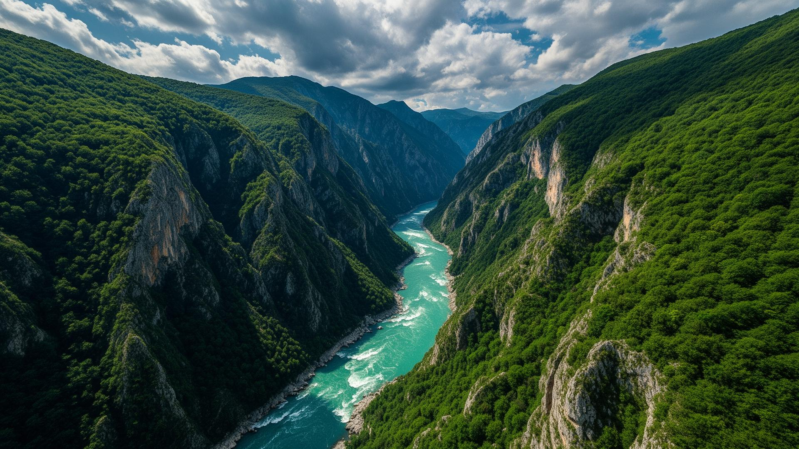
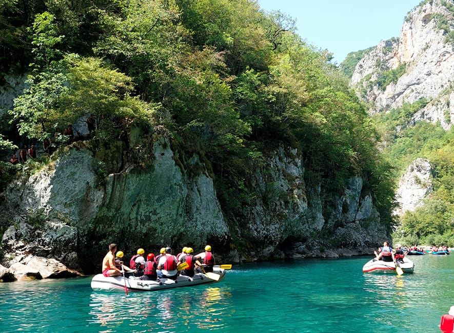
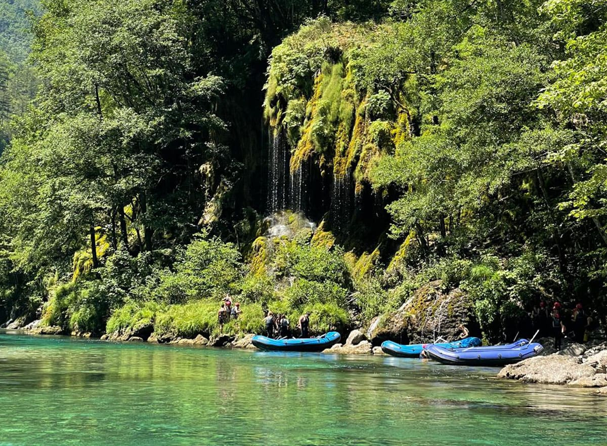
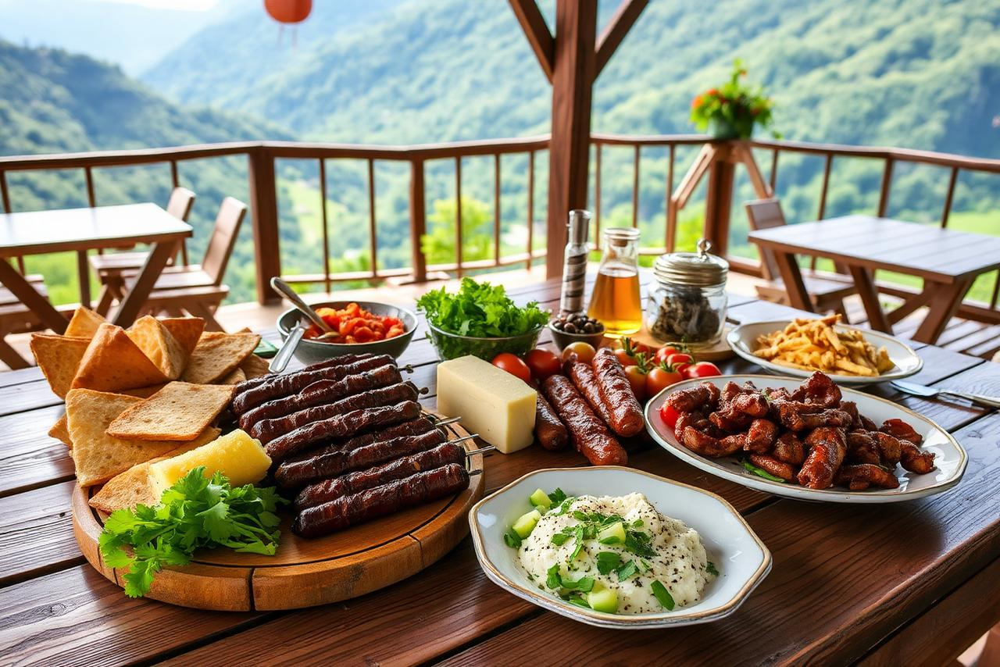

Bukovi Tare
Przygoda na rzece Tarze — rafting, piesze wędrówki i wypoczynek w sercu najgłębszego kanionu Europy
Witamy w Bukovi Tare
Nasza baza leży w samym sercu kanionu rzeki Tary i łączy przygodę z wypoczynkiem. Otoczona wiekowymi lasami bukowymi i krystalicznie czystą rzeką, Bukovi Tare to idealne miejsce dla miłośników przyrody i mocnych wrażeń.
Od ponad 15 lat organizujemy spływy raftingowe i wędrówki górskie, a nasz zespół profesjonalnych przewodników gwarantuje bezpieczną i niezapomnianą przygodę dla osób w każdym wieku.
Więcej o nas
Nasze atrakcje
Od emocjonującego raftingu po spokojne górskie szlaki — wybierz swoją przygodę


Wygodne noclegi
Nasze pokoje i apartamenty zapewniają komfort i ciepło górskiego domu. Każdy z nich jest wyposażony we wszystko, czego potrzebujesz do udanego pobytu.
- Wygodne pokoje z łazienką
- Apartamenty rodzinne
- Widok na rzekę i las
Domowa kuchnia
Spróbuj autentycznych specjałów tradycyjnej kuchni bośniackiej. Wszystkie posiłki przygotowujemy ze świeżych, lokalnych produktów.
Od śniadania z domowym kajmakiem (kremowym serem) i miodem po kolację z grilla na otwartym tarasie z widokiem na kanion — każdy posiłek to wyjątkowe przeżycie.

Co mówią nasi goście
Opinie naszych zadowolonych gości
„Niezapomniane przeżycie! Rafting na Tarze był najlepszym momentem naszego lata. Ekipa Bukovi Tare jest profesjonalna i bardzo gościnna.”
Marko P.
„Świetne noclegi, pyszne domowe jedzenie i przepiękna przyroda wokół bazy. Wracamy co roku!”
Ana S.
„Wszystko perfekcyjnie zorganizowane — od przyjazdu do wyjazdu. Wędrówki i rafting były fantastyczne. Polecam każdemu!”
Stefan M.
Zarezerwuj swoją przygodę
Skontaktuj się z nami, aby zarezerwować pobyt lub uzyskać więcej informacji. Jesteśmy dostępni telefonicznie, mailowo, na Viberze i WhatsAppie.
Skontaktuj się z nami